Córtex Estudos · 4º Semestre · Anato Pato II · Aula 07 (dupla)
Patologias do Sistema Cardiovascular
A aula mais densa do bloco: da bioquímica da contração ao laudo de necropsia de um infarto, passando pelos marcadores de lesão miocárdica, a placa aterosclerótica, as valvopatias (calcificada, reumática e do conjuntivo) e as comunicações septais. O fio condutor que a professora repetiu o tempo todo: o problema é sempre o oxigênio → ATP — e a clínica bem colhida é soberana sobre qualquer exame.
1 · Panorama: por que o coração ainda é quem mais mata
- As doenças cardiovasculares continuam sendo a principal causa de morte no mundo — e a estatística não melhora, piora. Quase um terço das mortes por doença cardíaca ocorre antes dos 75 anos (dano econômico), e as cardiopatias isquêmicas lideram.
- O motor disso, segundo a professora, é o estilo de vida: alimentação ultraprocessada, sedentarismo, falta de tempo e de organização — e o infarto está ficando cada vez mais jovem (casos aos 20, 30 e até na adolescência).
- Não é só coração: a mesma doença vascular aparece como AVC, isquemia mesentérica, de artéria renal.
- Exercício aeróbico regular (≈3×/semana) estimula a ramificação das coronárias (angiogênese miocárdica) — circulação colateral que protege antes que a idade o faça.
As vias fisiopatológicas das lesões cardiovasculares (slide da aula)
- 1Obstrução de fluxo — a mais prevalente; por isso a aula começa por ela (cardiopatia isquêmica).
- 2Falência da bomba — depois do infarto "o coração nunca mais é o mesmo": músculo trocado por cicatriz que não contrai nem relaxa.
- 3Fluxos regurgitantes — valvas que não fecham (inclusive por lesão de músculo papilar no infarto, ou isoladamente pela LDL no folheto).
- 4Distúrbios de condução — o feixe de His e as fibras de Purkinje estão entranhados no músculo: se ele morre, a condução "dança junto" → arritmias.
- 5Ruptura vascular ou cardíaca e defeitos congênitos — a aula fecha com a descontinuidade de septo, que pode ser achada até no adulto.
As setas não são uma sequência obrigatória: as realidades se cruzam (posso ter valvopatia pós-infarto ou valvopatia sem infarto nenhum).
2 · Cardiopatia isquêmica: causas e o endotélio
Isquemia = desequilíbrio entre suprimento sanguíneo e demanda de O2 e nutrientes. Na grande maioria das vezes, por redução da perfusão coronariana por doença aterosclerótica (± trombo).
🎯 O oxigênio é o "problemão", não a glicose
Uma glicose oferta 12 hidrogênios e exige no mínimo 6 O2 para ser oxidada — então o déficit de oxigênio se expressa muito antes do déficit de substrato. Toda conduta na doença vascular corre contra o tempo para devolver perfusão e oxigenação (por isso a fibrinólise do trombo: quanto antes reperfundir, menos hidrogênio livre e menos acidose).
Causas que NÃO são placa (a "minoria" do slide)
- Crise hipertensiva: a pressão é a velocidade do sangue nos tecidos; muito alta, a troca gasosa fica ineficaz → infarto sem obstrução nenhuma. Por isso crise hipertensiva é emergência.
- Hipotensão grave/choque (hemorragia, sepse com vasodilatação extrema): fluxo lento → hipóxia. Sem causa definida, expande-se volume enquanto se investiga.
- Doença pulmonar grave (a doença é oxigenatória, não circulatória), anemias mal conduzidas (talassemia, falciforme), envenenamento por metais pesados (mercúrio de garimpo, rejeitos de barragens): o metal ocupa o lugar do O2 no ferro da hemoglobina e a 2,3-BPG não desfaz essa ligação.
- Êmbolos que entram de repente na circulação: líquido amniótico, gordura (fratura, lipoaspiração), ar. Não aderem à parede, mas ocupam o lúmen.
O endotélio é um órgão
- Epitélio pavimentoso simples que reveste a luz — e é sensor do cisalhamento. Pressão sobe → produz óxido nítrico → difunde para a média → relaxa a musculatura lisa → vasodilatação. Pressão cai → libera endotelina → vasoconstrição. Esse ajuste acontece o dia inteiro (subir escada correndo, acordar de manhã).
- O hipertenso/dislipidêmico de longa data tem doença endotelial muito antes da placa: o endotélio não responde. O agressor mais comum é a LDL alta depositada na superfície, com inflamação e destruição do epitélio.
- Teste da função endotelial: Doppler de vaso de médio calibre antes e depois de um vasodilatador sublingual — quem não dilata tem doença endotelial e risco altíssimo (e não adianta insistir em drogas que dependem do endotélio).
3 · O cardiomiócito e a contração (a base dos marcadores)
A professora revisou a fisiologia porque os marcadores do infarto são proteínas de dentro do cardiomiócito — saber quem são explica por que aparecem no sangue.
- Características do músculo cardíaco: muitas mitocôndrias, contração repetida a vida inteira, incapaz de manter débito de O2, rápida oxidação e síntese de ATP, ≈ 1 capilar por fibra. E não faz mitose com eficácia: célula morta vira cicatriz.
- Kit proteico: actina (colar de pérolas) enovelada pela tropomiosina, na qual se prende o complexo de troponinas I, C e T; a miosina tem cabeças que precisam encaixar entre os monômeros de actina — mas o sítio está ocupado pelas troponinas.
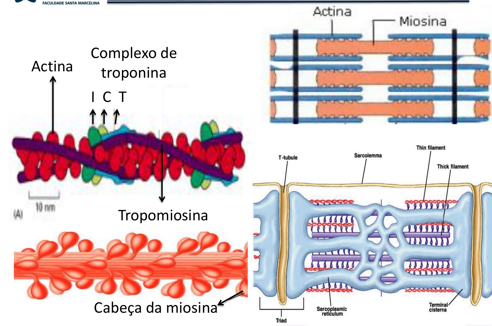
A sequência da contração
- 1Potencial de membrana — mantido pela bomba Na⁺/K⁺ (gasta ATP). Sem ele, a célula não sente o potencial de ação.
- 2Cálcio desencadeador — o potencial de ação abre canais de cálcio voltagem-dependentes; entra cálcio vindo do túbulo T, pouco, mas que dispara a avalanche de cálcio do retículo sarcoplasmático (cálcio liberando cálcio).
- 3Troponina C — o cálcio liga no receptor da troponina C, o complexo I-C-T se desloca e libera o sítio para a cabeça da miosina.
- 4Fosforilação da miosina — pelo ATP, com o magnésio como cofator → ponte cruzada, deslizamento.
- 5Recaptação — ao fim da sístole a Ca²⁺-ATPase (gasta ATP) tira o cálcio; o bloqueio volta e a fibra relaxa. Cálcio que fica dentro ativa caspases → morte.
4 · O que a isquemia faz na célula: ATP, cálcio, lactato e DAMPs
🎯 "O ATP é o único problema de tudo"
Sem O2 → sem ATP → (1) a bomba Na⁺/K⁺ para: perde o potencial de membrana, entra sódio e água (degeneração hidrópica) e a célula fica insensível ao potencial de ação; (2) sem potencial de ação não abre canal de cálcio, não desloca troponina C, não contrai — área grande imóvel pode parar o coração inteiro; (3) o cálcio que entrou não sai (Ca²⁺-ATPase parada) e ativa caspases → apoptose. Resultado: na área infartada há células mortas por necrose (evolução da degeneração hidrópica, a via clássica) e por apoptose indesejada — o que pode ampliar a área de necrose além do território do vaso.
- Tolerância baixíssima: em ≈ 60 segundos de déficit, ~50% das células já estão degeneradas; em ≈ 5 minutos, rompem-se.
- A única solução resolutiva é reperfundir: voltando o ATP, voltam as bombas. Quelante de cálcio, magnésio (otimiza a fosforilação da miosina nas paradas prolongadas) e anti-inflamatórios são adjuvantes, nunca a conduta primária — e estão em protocolo.
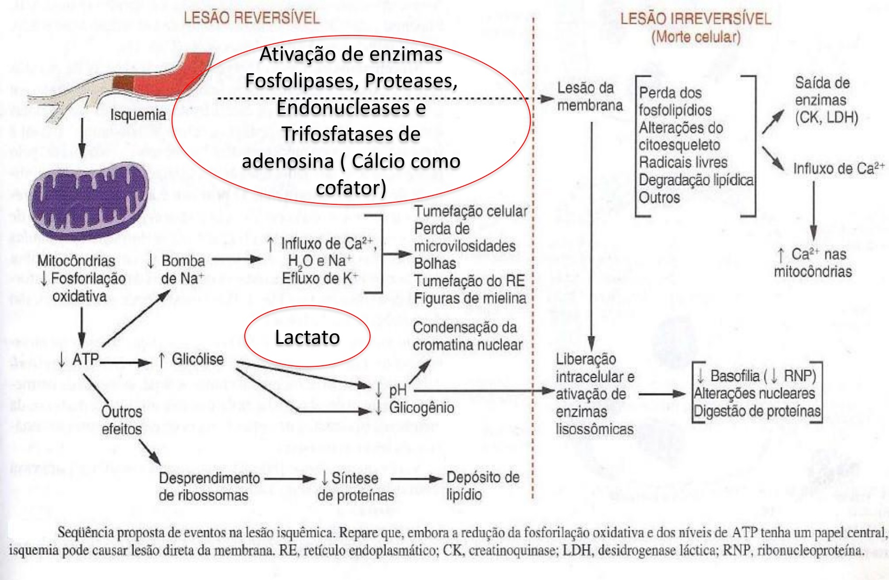
Lactato: entender o mecanismo, não decorar número
- Sem O2 na cadeia respiratória, sobram hidrogênios → acidose da matriz mitocondrial → enzimas do ciclo de Krebs desnaturam → para NADH/FADH₂ → para o ATP.
- A célula "não entende" e aumenta o substrato: fica mais permeável à glicose, faz mais glicólise → piruvato + NADH que não entram na mitocôndria doente → o NADH transfere o hidrogênio ao piruvato → lactato.
- Lactato alto diz uma coisa só: estou em respiração anaeróbia (hipóxia) — seja infarto, hemorragia ou sepse (vasodilatação + alta demanda da resposta imune). A interpretação é a mesma, aplicada a cada história.
DAMPs e a lesão de reperfusão
- O cardiomiócito que estoura libera DAMPs (ATP, pedaços de núcleo, de mitocôndria, de membrana). Macrófagos os reconhecem, liberam citocinas, atraem leucócitos — que produzem radicais livres e enzimas e destroem mais tecido. "A coisa já está feia e vem uma inflamação para acabar de lascar."
5 · Marcadores de lesão miocárdica: CK, mioglobina e troponinas
Proteínas do citoplasma do cardiomiócito que caem primeiro nos capilares do interstício e só depois chegam à circulação sistêmica. O tempo até aparecerem depende da quantidade dentro da célula e do tamanho da molécula; a degradação no plasma (que não é o ambiente delas) define quanto tempo ficam detectáveis. Os estudos são de infartos de pequeno a médio porte (os grandes podem elevar antes).
🎯 "Isso aqui tem que decorar" — e a prova traz o histórico com horário
A professora avisou que a prova dá a história (hora do início dos sintomas, sintomas) e você escolhe/interpreta o marcador. Sem saber as janelas, não há como usar a ferramenta.
| Marcador | O que é | Começa a subir | Pico | Normaliza | Sensib. | Uso preferencial |
|---|---|---|---|---|---|---|
| Mioglobina | reservatório de O2 no músculo; abundante | 1–2 h | 6–9 h | 12–24 h | 95% | diagnóstico precoce e reinfarto; inespecífica (músculo esquelético, renal, queimados, trauma) |
| CK-MB | creatina quinase (reserva de fosfato), isoforma cardíaca | 4–6 h | 18 h | 48–72 h | 93% | quem chega tarde (horas); ruim para diagnóstico precoce |
| Troponinas (I, C, T) | proteína estrutural do complexo de contração; grande | 4–6 h | 36–72 h | 5–14 dias | 95% | quem chega dias depois ("semana passada joguei bola e passei mal") |
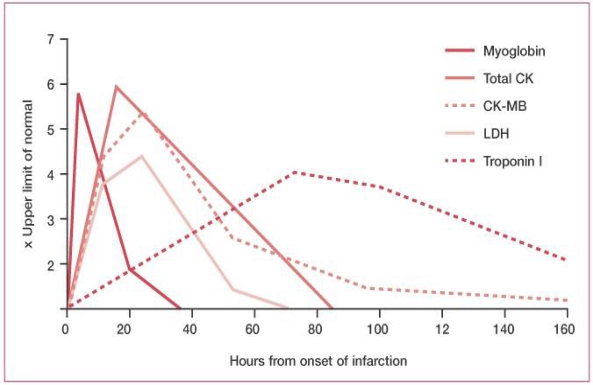
CK total × isoformas
- CK total (barata, acessível) não diz de onde veio: músculo esquelético, cérebro e coração têm CK. Agente de confusão = atividade física intensa, queda, trauma (o ciclista que "infartou" no passeio; o infartado que bateu o carro no muro da unidade).
- Isoformas: CK-MB = coração · CK-MM = músculo esquelético · CK-BB = cérebro. Dá até para fazer CK total − MB para estimar o quanto veio do esquelético.
⚠️ Triplicata e "casadinhos"
Uma CK-MB negativa 3 h após o início da dor não exclui infarto — está fora da janela. Repete-se em intervalos (triplicata), em vez de "dosar uma vez, dar analgésico e mandar para casa". E nunca se pede um marcador só: combina-se um específico com um inespecífico (ex.: TGO + mioglobina, TGO + CK-MB), somando clínica e eletrocardiograma — a clínica é soberana; quem pede exame sem saber a clínica só gera fator de confusão. O sangue é o material (a urina demora demais: "infarto é tudo para ontem").
🩺 Mioglobina no reinfarto
Paciente infartado com mioglobina 4 (referência 1); ainda na emergência, volta a ter dor e a nova dosagem vem 6 — um novo pico sobre o anterior com dor = reinfarto. Uso clássico na emergência e na UTI, graças à subida e queda rápidas.
6 · Angina e as manifestações evolutivas
- Angina estável: dor no esforço previsível (subir escada), alivia no repouso; estenose média de ~70%. O coração não dói com obstrução abaixo de 70% — tolerância "péssima". E o paciente recua (troca a escada pelo elevador) em vez de investigar; a placa segue evoluindo.
- Angina instável: dor a pequenos esforços ou em repouso, contínua e crescente; estenose média de ~90% — "um fio de sangue passando".
- Angina por espasmo: vasoconstrição somada a uma obstrução prévia — frio (vasoconstrição para conservar calor) e catecolaminas de grandes emoções (raiva, assalto, luto). Infartos por espasmo giravam em ~4% e foram a ~12% na pandemia.
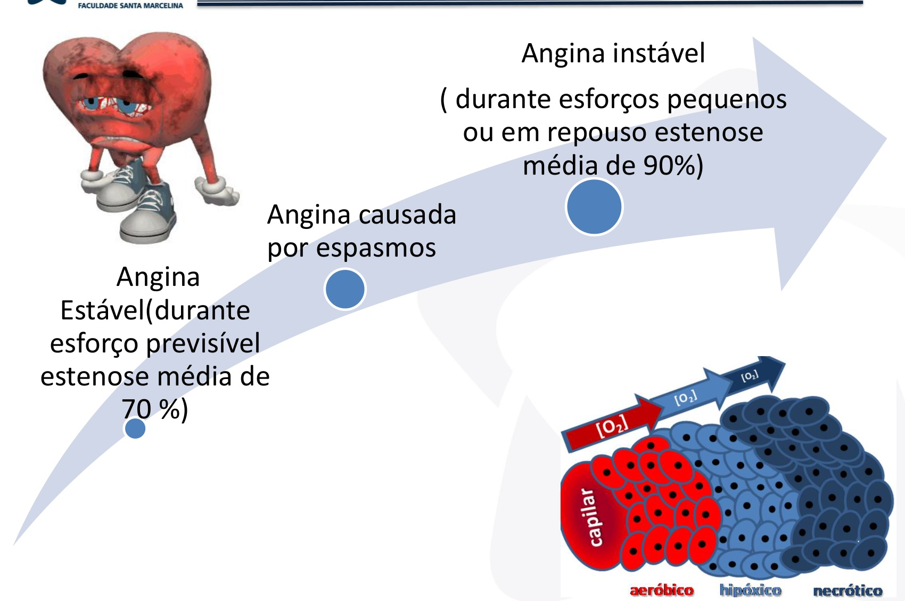
Manifestações clínicas evolutivas
- 1Infarto agudo do miocárdio — morte de cardiomiócitos (necrose).
- 2Cardiopatia isquêmica com ICC — após um IAM ou pela soma de pequenas lesões isquêmicas que deixam fibrose: o paciente que infartou 2, 3, 4 vezes até a cicatriz ser limitante.
- 3Morte súbita cardíaca — lesão tecidual + arritmia fatal.
- Infarto fulminante = artéria de grande calibre e distribuição ampla. A causa prevalente é aterosclerose + trombo agudo: a placa (crônica) expõe o subendotélio e o trombo (agudo) fecha tudo — sem o trombo, o paciente teria uma angina instável e tempo de intervir.
7 · Patologia do infarto: macro, micro e cicatriz
Na verificação de óbito
- Duas formas de laudar infarto: ver a obstrução (placa/trombo na coronária, achada tateando as áreas de rigidez) ou ver a resposta — a hiperemia reativa, área escurecida pela chegada de sangue e células inflamatórias atraídas pelos DAMPs (não é hiperperfusão: é demanda inflamatória).
- Ruptura da parede: necrose num órgão sob pressão "abre um buraco" → sangue no saco pericárdico → tamponamento cardíaco, que compromete sístole e diástole e mata mais rápido que o próprio infarto.
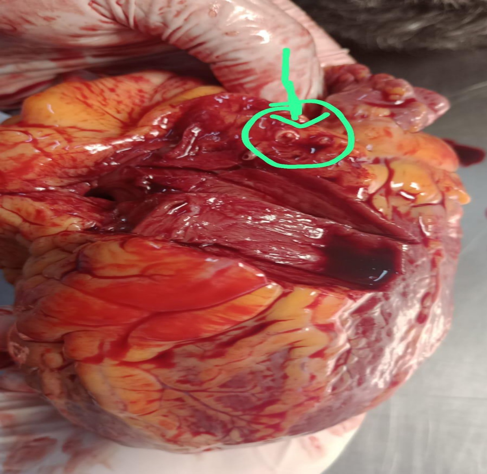
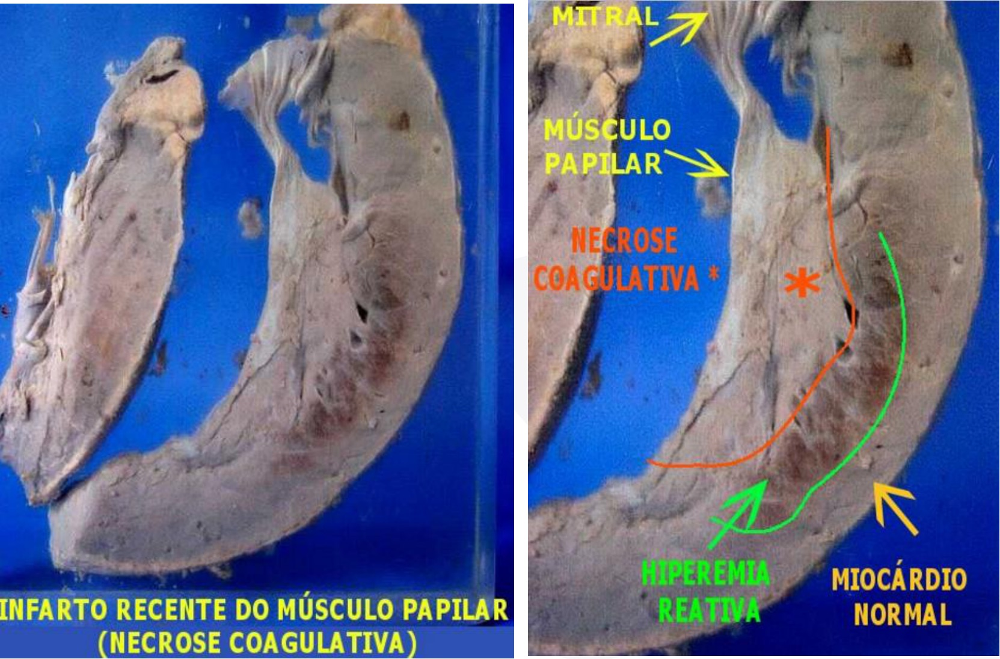
🩺 A placa de 10–20% e o trombo de 100%
Senhora com sobrepeso, dedos amarelados de tabagista, esteatose hepática e fibrose apical pulmonar: tudo fator de risco de longa data. Dor precordial após o jantar, parada, óbito. Na coronária, uma placa ateromatosa amarela que obstruía no máximo 10–20% — o que fechou 100% do lúmen foi o trombo: a LDL lesou o endotélio, expôs o fator de von Willebrand do subendotélio, que atrai plaquetas, que liberam mais von Willebrand e atraem mais plaquetas. A professora usou o caso para defender a proteção antitrombótica do paciente hipertenso com LDL alto (ela citou que a diretriz a preconiza, além do anti-hipertensivo e da estatina).
Microscopia: necrose de coagulação → cicatriz
- Na lâmina de H&E trabalha-se com membrana, núcleo e citosol: citosol mais eosinofílico; núcleo picnótico (cromatina condensada), em cariorrexe (fragmentado) ou ausente (cariólise); cardiomiócitos separados por edema e infiltrado inflamatório intersticial.
- Tecido de textura firme, proteínas estruturais e enzimas desnaturadas (por isso a arquitetura se mantém), células anucleadas e eosinofílicas.
- Cronologia do infiltrado: primeiro neutrófilos (agudo), depois mistura com linfócitos. A inflamação remove os restos por fagocitose e suas citocinas ativam fibroblastos → tecido conjuntivo denso: a cicatriz que não contrai nem relaxa.
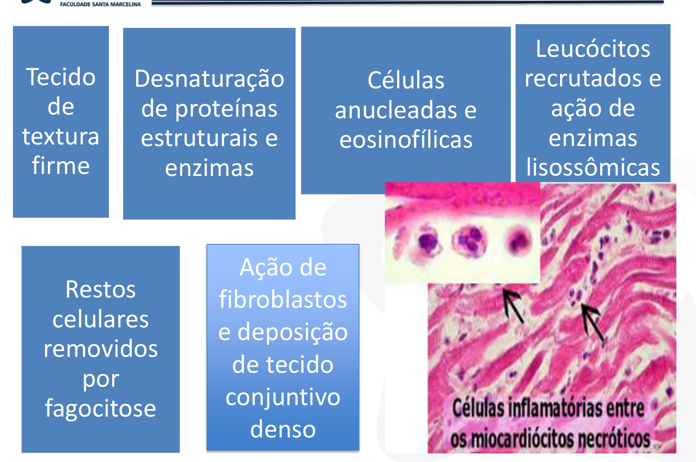
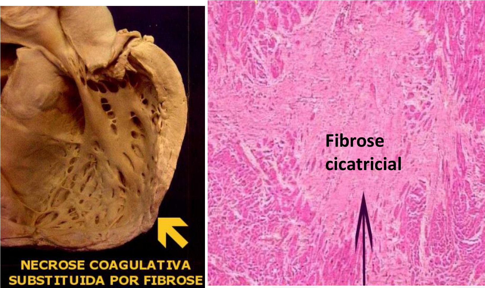
Qualquer órgão infarta pela mesma lógica (alça intestinal torcida, rim, cérebro): o órgão vaza seus produtos e corre risco de romper — muda só a ferramenta diagnóstica.
8 · Aterosclerose: da LDL à placa instável
"Endurecimento das artérias": placas de lípides, células e tecido conjuntivo em vasos que sofrem pressão elevada. Fatores de risco do slide: LDL elevado, HDL reduzido, hipertensão, diabetes, idade, obesidade, sedentarismo, tabagismo, sexo. Lembrete das camadas: íntima (endotélio + subendotelial), média (músculo liso produtor de fibras elásticas, reticulares e colágenas) e adventícia (conjuntivo frouxo, vasos e nervos).
Fisiopatologia (slide "Fisiopatologia")
- 1LDL — acúmulo de LDL; geração de ânion superóxido → LDL oxidada; injúria endotelial, ↓ síntese de NO. O endotélio passa a expressar VCAM-1 e os monócitos aderem.
- 2Célula espumosa — monócitos atravessam o endotélio, entram na íntima e viram macrófagos; pelo receptor de varredura-A (SR-A) captam LDL oxidada e viram células espumosas — não conseguem digerir a gordura e seguem liberando citocinas.
- 3Capa fibrosa — células musculares lisas da média migram para a íntima e sintetizam colágeno (capa fibrosa). A inflamação atrai linfócitos T e produz metaloproteinases e citocinas que enfraquecem a capa → risco de trombose.
- O endotélio expressa o receptor LOX-1 (internaliza LDLox) e sintetiza ICAM-1, E-selectina, P-selectina (de plaquetas) e VCAM-1, além de IL-1, IL-6 e TNF-α → adesão de leucócitos e plaquetas, infiltração subendotelial, atividade pró-coagulante.
- Camada média: músculo liso quiescente pelo NO; prolifera com PDGF, endotelina, trombina, interferon e IL-1 → lesão vascular = proliferação de músculo liso e matriz invadindo a íntima.
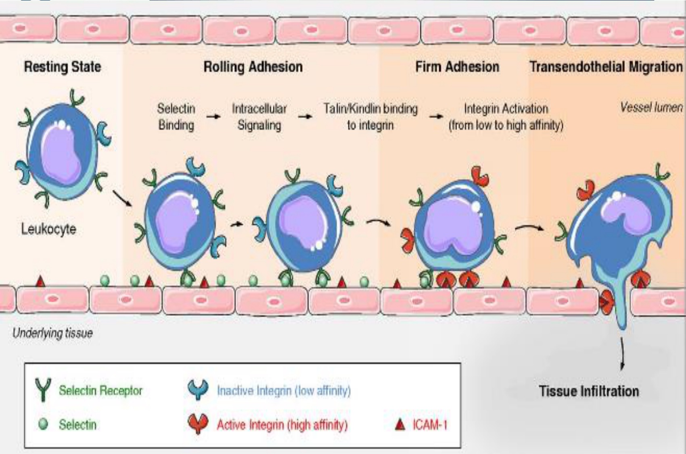
Instabilidade da placa
| Fatores mecânicos | Fatores químicos |
|---|---|
| grau de obstrução da luz | conteúdo lipídico × cápsula fibrosa |
| força de turbulência × cisalhamento | metaloproteases agindo no endotélio e na média |
| remodelamento expansivo × enfraquecimento | inflamação × instabilidade |
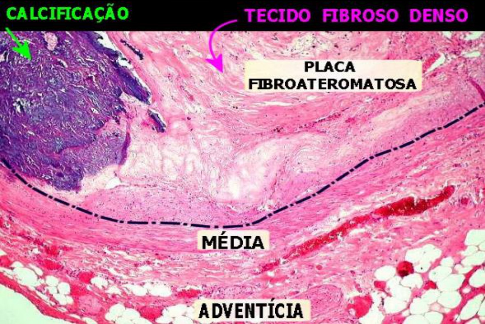
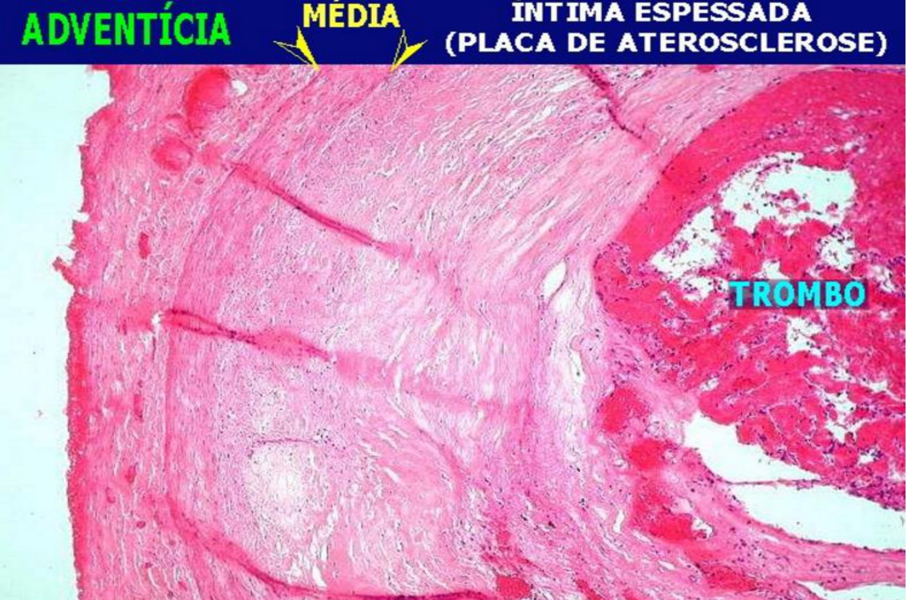
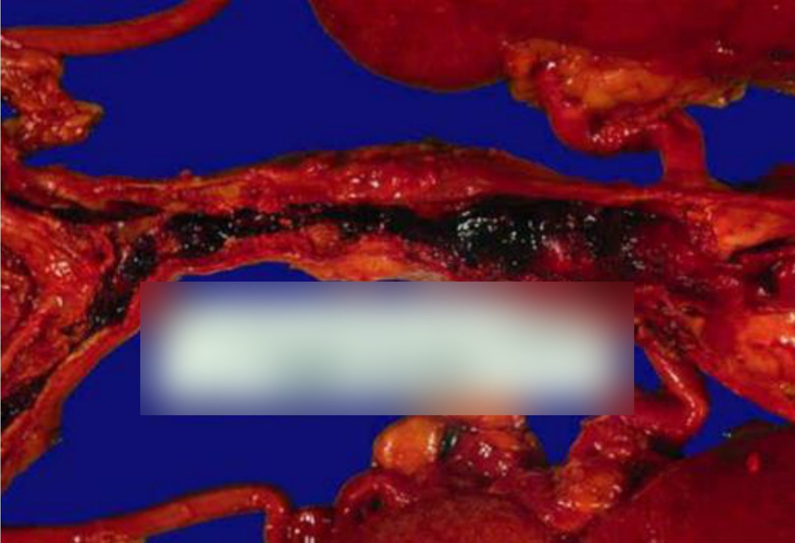
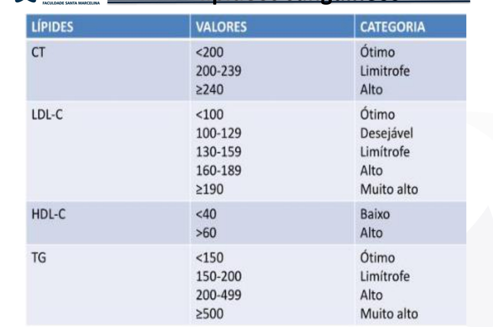
9 · Valvopatias e a estenose aórtica calcificada
- As valvas AV (mitral e tricúspide) abrem e fecham pela tração do músculo papilar via cordas tendíneas; aórtica e pulmonar, pela pressão do próprio fluxo.
- O folheto é uma lâmina fina de tecido conjuntivo (matriz amorfa de proteoglicanos + muitas fibras elásticas e algumas colágenas, produzidas por fibroblastos) revestida nas duas faces por endotélio. Endotélio saudável não expressa moléculas de adesão; doente, expressa — no vaso ou na valva.
- Estenose = incapacidade de abrir completamente (dificuldade de passagem) · Insuficiência = incapacidade de fechar (regurgitação). Pode haver dupla lesão.
🎯 "Tudo que agride o vaso agride a valva"
A causa mais comum de adoecimento valvar é a valvopatia aterosclerótica calcificada, com os mesmos fatores de risco da obstrução vascular (LDL alta, hipertensão, idade). A LDL toca o endotélio do folheto, ele expressa ICAM/VCAM/P-selectina, macrófagos fagocitam e viram espumosos, citocinas lesionam e ativam fibroblastos → fibrose (colágeno ganha das elásticas) ± calcificação distrófica pelo pH do ambiente inflamado. Resultado: valva espessa e rígida que abre mal e fecha mal.
- Números da aórtica: área valvar normal ≈ 4 cm²; na estenose cai para 0,5 até 0,1 cm² (o caso da aula: 0,5 no diagnóstico, 0,1 na cirurgia — paciente que não conseguia tomar banho em pé).
- Sintoma-guia: dispneia para coisas pequenas (varrer a casa), além de tontura e fraqueza.
- Tratamento: lesão cicatricial não tem volta → troca valvar. Prótese dura em média 5–7 anos; o paciente suporta em média ~3 trocas na vida (complicação/óbito costuma vir na terceira) — por isso a doença em gente cada vez mais jovem preocupa. A valva só chega à patologia depois de trocada (ninguém biopsia valva).
Cascata da estenose aórtica calcificada
- 170–80% de obstrução — passa só 20–30% do volume; o resto fica retido no VE (sobrecarga).
- 2Hipertrofia ventricular esquerda — resposta adaptativa para vencer a resistência: células maiores, com mais mitocôndrias e retículo... e mais demanda de O2.
- 3Isquemia e angina — as coronárias nascem na base da aorta, logo após a valva doente: oferta baixa para demanda alta → risco iminente de infarto.
- 4ICC — hiperfunção compensatória e exaustão; congestão pulmonar e estase favorecem trombos (tríade de Virchow), inclusive intracavitários. Operar antes que a hipertrofia seja expressiva.
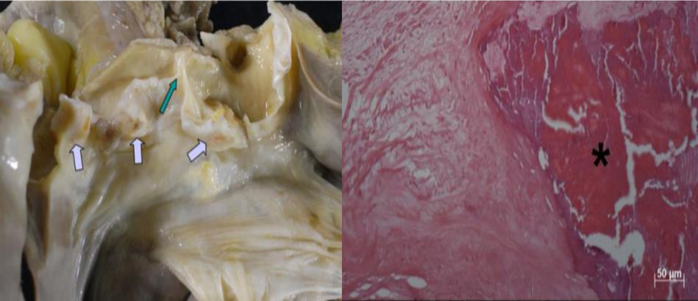
10 · Febre reumática: mimetismo molecular e critérios de Jones
A segunda grande causa de valvopatia (a professora: segunda maior causa de morte por doença valvar) — e fruto de uma "sucessão de incompetências" no manejo de algo simples: a faringoamigdalite pelo estreptococo β-hemolítico do grupo A.
Mimetismo molecular
Algumas proteínas do estreptococo diferem das nossas por um ou dois aminoácidos. O macrófago fagocita a bactéria, apresenta um epítopo ao linfócito T, que ativa o B → anticorpo. Se o epítopo for uma das sequências homólogas, o anticorpo reconhece o tecido humano, opsoniza, atrai fagócitos e inflama.
| Estrutura bacteriana | Estrutura humana | Patologia |
|---|---|---|
| Proteína M (no pili) | tropomiosina dos cardiomiócitos | miocardite reumática |
| N-acetilglicosamina (parede) | glicoproteínas das valvas (conjuntivo) | valvulite |
| mucoproteínas da parede | conjuntivo da sinóvia | artrite (poliarticular) |
| componentes da membrana protoplasmática | sarcolema dos vasos | vasculite (eritema que segue o trajeto do vaso) |
| componentes da membrana protoplasmática | citoplasma do núcleo caudado | coreia de Sydenham |
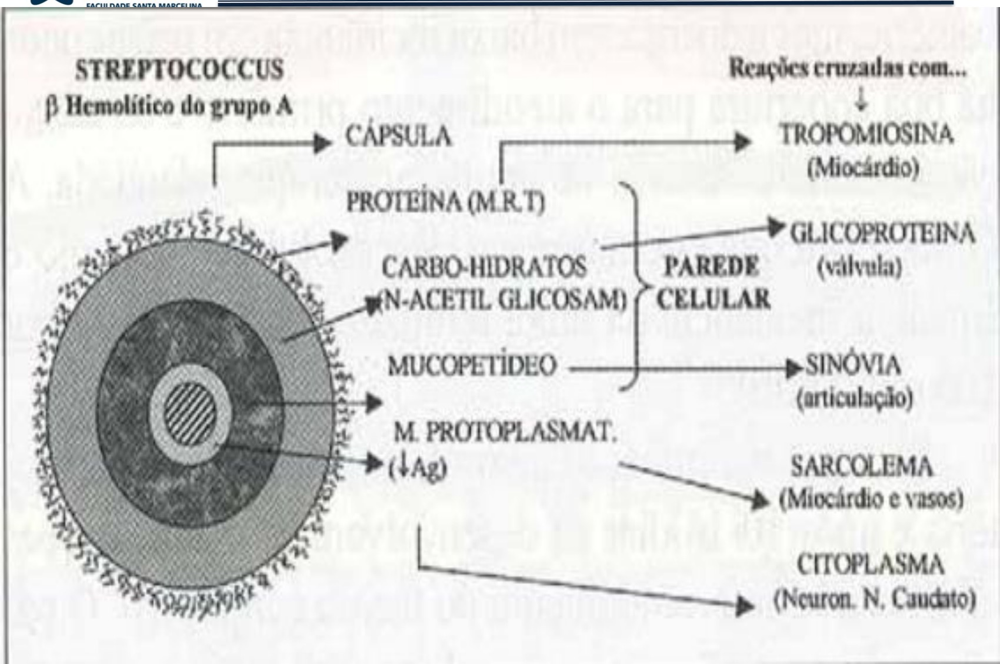
- Pancardite possível (pericárdio, miocárdio, endocárdio). Na cardite: anticorpos fixados ao endotélio valvar → ↑ VCAM → infiltração de neutrófilos, macrófagos e linfócitos T → inflamação e necrose.
- Tempo: anticorpos surgem 7–14 dias após a infecção — o paciente com febre reumática não está com a garganta cheia de pus; ele tem uma história de dor de garganta semanas antes, que só conta se alguém perguntar.
- Quem: amigdalites predominam em crianças e jovens. Risco cresce com infecções repetidas (título de anticorpos crescente, como doses de vacina) e com polimorfismo genético (nem todo exposto desenvolve).
- A inflamação na valva é aguda, mas sem patógeno no local (hemocultura negativa) — é resposta adaptativa (anticorpos), por isso o infiltrado é linfocitário. A valvulite aguda deixa folheto e cordas "melados", com eritema e edema; a ruptura de cordas tendíneas leva a colapso — alto índice de óbito nas primeiras 48 h do início dos sintomas.
🎯 Critérios de Jones modificados — "me preocupo muito mais com vocês sabendo Jones"
| Critérios MAIORES (onde o anticorpo liga) | Critérios MENORES (inflamação) |
|---|---|
| Cardite | Febre |
| Artrite | Artralgia |
| Coreia | Elevação de VHS e PCR |
| Eritema marginado | Alterações no ECG |
| Nódulos subcutâneos |
1 maior + 2 menores ou 2 maiores + 1 menor → abre a suspeita (dá "score" para ser febre reumática). A confirmação é a evidência de contato com o estreptococo: ASLO (anticorpo antiestreptolisina O — a enzima que lisa hemácias, a hemólise do ágar-sangue) positiva = padrão-ouro, já que não há bactéria para cultivar. A professora avisou que a prova traz um caso com história e tabela de exames para você montar Jones.
- Tratamento: não há infecção para tratar — trata-se a resposta imune com imunossupressão; a memória imunológica não se apaga → vigilância e imunossupressão a cada nova atividade inflamatória.
- Prevenção primária (o "mundo ideal" da diretriz): na faringoamigdalite, colher swab → Gram (cocos Gram-positivos em fila = estreptococo; já inicia antibiótico com boa cobertura, em geral penicilina) → cultura (sensibilidade 90–95%, padrão-ouro; confirma β-hemolítico do grupo A) → antibiograma. Antibiótico errado prolonga a exposição aos antígenos e aumenta o risco. O tratamento com penicilina injetável é doloroso e longo — é preciso explicar à família para garantir adesão.
- Tirar a amígdala não previne (a infecção só muda de lugar — faringite); amigdalectomia só por razão anatômica.
A lâmina: nódulos de Aschoff e células de Anitschkow
- Infiltrado inflamatório crônico linfocitário expressivo + capilares congestos. A chave: nódulos de Aschoff (agregados de macrófagos, inclusive multinucleados — lembram granuloma; fazem fibrinólise tecidual e apresentam antígeno ao T) e células de Anitschkow (macrófago isolado hiperativado, "olho de coruja").
- São patognomônicos da febre reumática — mas não servem para diagnóstico: só aparecem na valva trocada ou na necropsia (explicam a troca ou a morte).
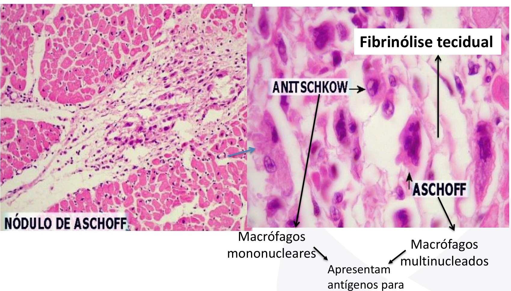
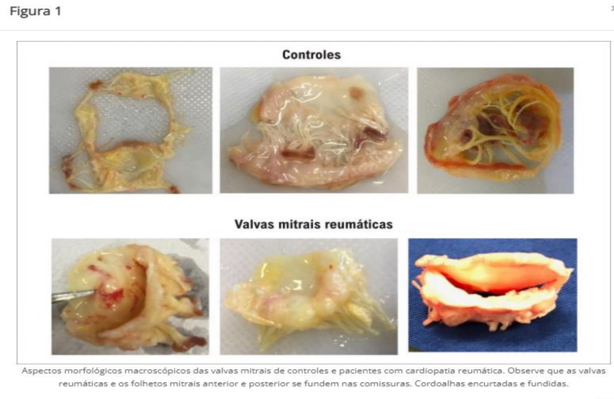
11 · Valvopatias das doenças do conjuntivo (Marfan, Ehlers-Danlos)
- Doenças genéticas (raras, ~2–3% das causas de doença) com mutações nos genes das proteínas do conjuntivo: Marfan (fibrilina), Ehlers-Danlos, osteogênese imperfeita ("ossos de vidro"). Herdadas ou mutação nova no indivíduo.
- A mesma fragilidade está onde houver conjuntivo: osso, pele, média das artérias (muito mais importante que nas veias, pois sustenta a PA) e folhetos valvares. Tratar só a ortopedia e esquecer o coração é o erro que a professora condenou.
- Pistas de fenótipo: estatura muito alta e rosto alongado (Marfan); hiperelasticidade da pele, esclera azulada, articulações que fazem movimentos atípicos ("aquilo não é habilidade, é mutação"); perdas gestacionais após o 1º trimestre (o conjuntivo do útero não sustenta o colo quando o bebê ganha peso).
Conjuntivo mutado: as duas consequências cardiovasculares
- 1Artérias → aneurisma — média menos resistente deforma antes de romper: aneurismas sem hipertensão nem aterosclerose (ex.: raiz/arco da aorta no Marfan; aneurisma cerebral). Se somar HAS, obesidade e aterosclerose, "é uma bomba atômica".
- 2Valvas → degeneração mixomatosa — perda de elasticidade e acúmulo de material mucoide (proteoglicanos, basofílico); valva frouxa, abaulada, espessa, aumentada, com prolapso, cordas alongadas e delgadas → insuficiência e risco de rotura de corda.
- Histologia: na valva normal, a mistura harmônica do material amorfo (azul) com as fibras (rosa) dá um tom lilás; na mutada há segregação — bolo de material amorfo de um lado, fibras do outro, poucos fibroblastos (remodelamento comprometido). Macro: valva em "couve-flor".
- Sintoma número um: dispneia sem causa aparente.
- Sem tratamento curativo (edição gênica ainda experimental); prótese cicatriza mal nesse tecido. O que vale: descobrir cedo, afastar os fatores de risco somados (peso, PA, colesterol) e aconselhamento genético (o Brasil tem só cerca de 400 geneticistas).
🎯 O que a professora quer (e o que NÃO quer)
"Eu não quero nome de gene": saiba que aneurismas e valvopatias podem ter componente genético e que Marfan, osteogênese imperfeita e Ehlers-Danlos são doenças do conjuntivo com repercussão cardiovascular. Mutações específicas não são cobradas.
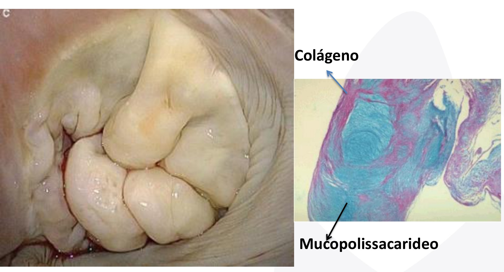
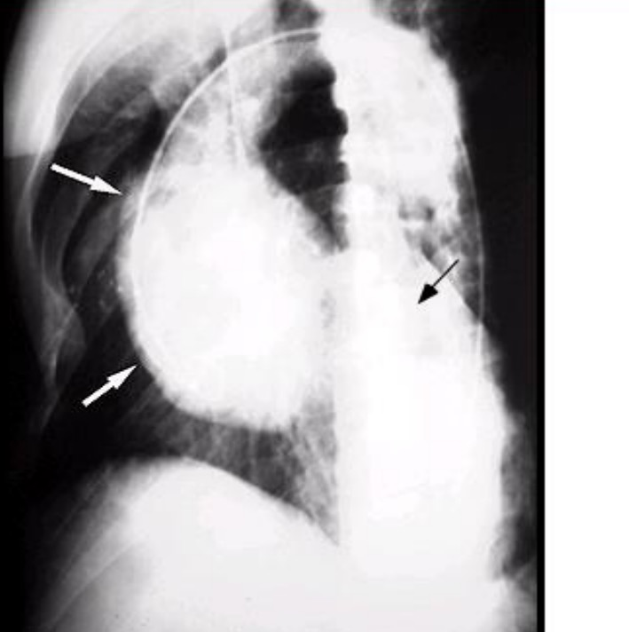
12 · Cardiopatias congênitas: comunicações interatrial e interventricular
- Cerca de 90% são de herança multifatorial (predisposição genética + fatores ambientais lesando proteínas de sinalização e fatores de crescimento); o resto, síndromes. A embriologia cardíaca começa no fim da 3ª semana.
- O septo interventricular cresce rápido e quase sempre fecha; o interatrial fecha mais tarde (a mistura sanguínea é necessária até o fim da gestação — forame oval). Por isso, na aula, a descontinuidade interatrial é a mais comum.
- Pode passar despercebida e aparecer no adulto; a triagem é o ultrassom morfológico no pré-natal e o exame do neonatologista.
| Como ensinado na aula | Defeito do septo ATRIAL | Defeito do septo VENTRICULAR |
|---|---|---|
| Shunt | direita → esquerda (o átrio direito, distendido pelas cavas, vence a pressão do retorno pulmonar) | esquerda → direita (o VE, mais musculoso, vence o VD) |
| Consequência | sangue rico em CO2 na circulação sistêmica → ↓ saturação → cianose | mais volume para o pulmão → ↑ pressão e resistência pulmonar → hipertrofia de VD → insuficiência (edema pulmonar se grave) |
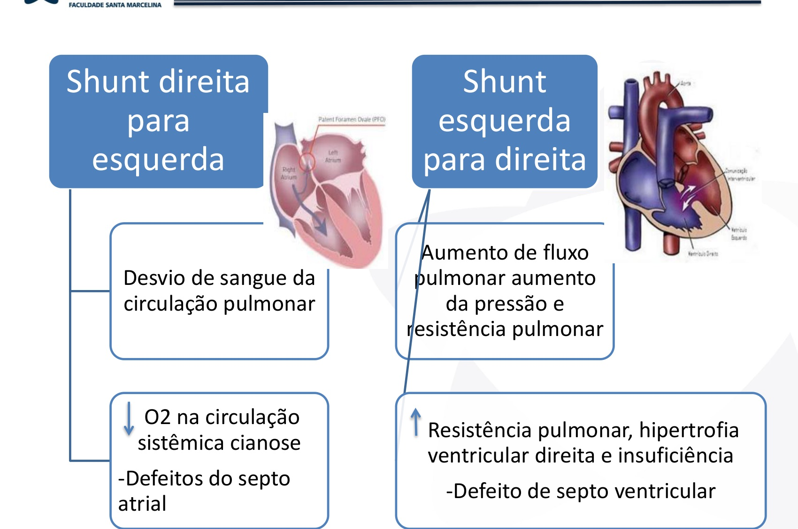
- Sinais clínicos: cianose periorbicular e de extremidades (boquinha e pontas dos dedos roxas, principalmente ao chorar — o choro é o grande gasto energético do bebê), respiração rápida e curta, prostração, apatia e palidez (mama com pausas, cansado), aumento da área cardíaca, sinais de IC.
- Correção: a técnica é "simples" — o cirurgião contorna a borda do defeito com azul de metileno, carimba o molde numa gaze e recorta um remendo de pericárdio; o difícil é o caminho (circulação extracorpórea num bebê de ~3 kg com ~300 mL de sangue, sedação longa).
✅ Resumo rápido da aula
- Isquemia: problema = O2 → ATP. Maioria aterosclerose ± trombo; minoria crise hipertensiva (infarto sem obstrução), choque, pneumopatia, anemia, metais pesados, êmbolos. Endotélio: NO dilata, endotelina contrai; doença endotelial precede a placa.
- Na célula: sem ATP → bomba Na⁺/K⁺ para (hidrópica, sem potencial de ação) → sem cálcio desencadeador, sem troponina C, sem contração → cálcio preso → caspases (apoptose). Necrose + apoptose. Lactato = anaerobiose. DAMPs → inflamação lesiva. Resolutivo = reperfundir.
- Marcadores: mioglobina 1–2 h / pico 6–9 h / some 12–24 h (precoce, reinfarto, inespecífica) · CK-MB 4–6 h / 18 h / 48–72 h (chegada tardia) · troponina 4–6 h / 36–72 h / 5–14 dias (chegada de dias). Triplicata, casadinhos, clínica soberana.
- Angina: estável ~70% · instável ~90% · espasmo (frio, emoção). IAM → ICC por fibrose acumulada → morte súbita. Fulminante = placa + trombo agudo.
- Necropsia: obstrução ou hiperemia reativa; ruptura → tamponamento. Micro: eosinofilia, picnose/cariorrexe/cariólise, neutrófilos → linfócitos → fibrose.
- Aterosclerose: LDLox → VCAM-1 → monócito/macrófago → SR-A → célula espumosa → músculo liso migra e faz capa fibrosa → metaloproteinases enfraquecem → trombo (von Willebrand).
- Estenose aórtica calcificada: mesmos fatores da aterosclerose; 4 cm² → 0,5–0,1; HVE → isquemia/angina → ICC; dispneia; troca (5–7 anos, ~3 trocas).
- Febre reumática: EBHGA, mimetismo (M–tropomiosina, N-acetilglicosamina–valva, sinóvia, vasos, núcleo caudado). Jones 1M+2m ou 2M+1m + ASLO (padrão-ouro). Imunossupressão. Aschoff/Anitschkow = patognomônicos, não diagnósticos. Prevenção = swab, Gram, cultura, antibiograma.
- Conjuntivo: Marfan/Ehlers-Danlos/osteogênese → aneurismas + valva mixomatosa (couve-flor, prolapso, insuficiência); sem nome de gene.
- Congênitas: interatrial mais comum; na aula: CIA = shunt D→E (cianose) · CIV = shunt E→D (hipertensão pulmonar, HVD). Remendo de pericárdio.
🫀 Resumão Pré-Prova — Patologias do Sistema Cardiovascular
Revisão da véspera · Anato Pato II · Aula 07 dupla · só o que foi enfatizado
- Desequilíbrio suprimento × demanda; maioria = aterosclerose ± trombo.
- Minoria: crise hipertensiva (infarto sem obstrução), choque/hipotensão (hemorragia, sepse), pneumopatia grave, anemias, metais pesados (ocupam o O2 na hemoglobina), êmbolos (líquido amniótico, gordura, ar).
- O2 falta antes do nutriente (1 glicose = 12 H, precisa de 6 O2).
- Endotélio: cisalhamento ↑ → NO (dilata) · PA ↓ → endotelina (contrai). Doença endotelial vem antes da placa; testa-se com Doppler + vasodilatador.
- Exercício aeróbico regular → ramificação coronariana (proteção).
- Bomba Na⁺/K⁺ para → degeneração hidrópica + célula insensível ao potencial de ação.
- Sem potencial de ação → sem cálcio desencadeador (túbulo T → libera o do retículo) → sem ligar troponina C → sem contração.
- Ca²⁺-ATPase parada → cálcio preso → caspases → apoptose. No infarto: necrose + apoptose.
- Mg²⁺ = cofator da fosforilação da miosina. Quelante de Ca, Mg, anti-inflamatório = adjuvantes; resolutivo = reperfundir.
- Lactato: Krebs desnatura na acidose → glicólise ↑ → piruvato + NADH no citosol → lactato = anaerobiose (infarto, hemorragia, sepse).
- DAMPs (ATP, núcleo, mitocôndria, membrana) → macrófago → citocinas → leucócitos com radicais livres → mais lesão.
- ~60 s → 50% das células degeneradas · ~5 min → rompem.
| Sobe | Pico | Normaliza | Sens. | Use para | |
|---|---|---|---|---|---|
| Mioglobina | 1–2 h | 6–9 h | 12–24 h | 95% | precoce · reinfarto · inespecífica |
| CK-MB | 4–6 h | 18 h | 48–72 h | 93% | chegada horas depois |
| Troponina | 4–6 h | 36–72 h | 5–14 dias | 95% | chegada dias depois |
- Tempo depende de quantidade na célula + tamanho da molécula; ficam até serem degradadas no plasma.
- CK total inespecífica (exercício, trauma). Isoformas: MB coração · MM esquelético · BB cérebro.
- Negativo fora da janela ≠ sem infarto → triplicata. Pedir casadinhos (específico + inespecífico). Sangue, não urina. Clínica soberana.
- Estável: esforço previsível, ~70% (não dói abaixo disso) · Instável: pequeno esforço/repouso, contínua e crescente, ~90% · Espasmo: frio, catecolaminas (4% → 12% na pandemia).
- IAM (necrose) → ICC por fibrose acumulada (infartos repetidos) → morte súbita (arritmia fatal).
- Fulminante = artéria grande + placa + trombo agudo.
- Laudar: ver a obstrução ou a hiperemia reativa (resposta inflamatória aos DAMPs).
- Ruptura de parede → sangue no pericárdio → tamponamento.
- Placa de 10–20% + trombo de 100% (von Willebrand → plaquetas).
- Necrose de coagulação: eosinofilia, picnose, cariorrexe, cariólise, edema; neutrófilos → linfócitos → fibroblastos → fibrose (não contrai, não relaxa).
- FR: LDL ↑, HDL ↓, HAS, DM, idade, obesidade, sedentarismo, tabagismo, sexo.
- LDL → LDLox (superóxido) → ↓ NO + VCAM-1 → monócito adere, entra, vira macrófago → SR-A capta LDLox → célula espumosa.
- Endotélio: LOX-1, ICAM-1, E-selectina, P-selectina (plaqueta), VCAM-1; IL-1, IL-6, TNF-α → pró-coagulante.
- Músculo liso da média migra para a íntima → colágeno = capa fibrosa; PDGF, endotelina, trombina, IFN, IL-1 → proliferação; NO mantém quiescente.
- Metaloproteinases + inflamação + muito lipídio + turbulência → capa fraca → placa instável → trombo.
- LDL ótimo abaixo de 100 · HDL baixo abaixo de 40 · TG ótimo abaixo de 150 · CT ótimo abaixo de 200.
- Folheto = conjuntivo elástico + endotélio nas duas faces. Estenose = não abre · Insuficiência = não fecha · dupla lesão possível.
- "O que agride o vaso agride a valva": mesmos FR da aterosclerose → fibrose + calcificação distrófica.
- Área aórtica 4 cm² → 0,5–0,1 cm²; 70–80% de obstrução → HVE → demanda ↑ com coronárias (base da aorta) mal perfundidas → isquemia/angina → ICC (exaustão).
- Sintoma: dispneia a pequenos esforços. Tratamento: troca (prótese 5–7 anos; ~3 trocas na vida). Histologia só da valva removida.
| Bactéria | Humano | Doença |
|---|---|---|
| Proteína M | tropomiosina | miocardite |
| N-acetilglicosamina | glicoproteína valvar | valvulite |
| mucoproteínas | sinóvia | artrite |
| membrana protoplasmática | sarcolema dos vasos | vasculite |
| membrana protoplasmática | núcleo caudado | coreia de Sydenham |
- Jones: maiores = cardite, artrite, coreia, eritema marginado, nódulos subcutâneos · menores = febre, artralgia, VHS/PCR ↑, ECG alterado. 1M+2m ou 2M+1m.
- ASLO positiva = padrão-ouro do contato com o estreptococo (não há bactéria para cultivar; hemocultura negativa).
- Anticorpos 7–14 dias após a faringite · infecções repetidas + genética ↑ risco · infiltrado linfocitário · óbito alto nas primeiras 48 h da valvulite aguda.
- Tratamento = imunossupressão + vigilância. Prevenção = swab → Gram → cultura (padrão-ouro, 90–95%) → antibiograma; penicilina.
- Nódulos de Aschoff (agregado de macrófagos) e Anitschkow (macrófago isolado, "olho de coruja"): patognomônicos, não diagnósticos (valva trocada/necropsia).
- 2ª causa de morte por doença valvar. Amigdalectomia não previne.
- Marfan (fibrilina), Ehlers-Danlos, osteogênese imperfeita: conjuntivo fraco em osso, pele, média arterial e valvas.
- Artéria → aneurisma (sem HAS/aterosclerose) · Valva → mixomatosa: frouxa, abaulada, espessa, aumentada, prolapso, cordas alongadas → insuficiência ("couve-flor").
- Histologia: material mucoide segregado das fibras (perde o "lilás"), poucos fibroblastos.
- Pistas: hipermobilidade, esclera azulada, alta estatura, perdas gestacionais após o 1º trimestre. Aconselhamento genético. Nome de gene não cai.
- ~90% multifatoriais. Septo interatrial fecha por último (forame oval) → CIA é a mais comum (na aula).
- Modelo da aula: CIA → shunt D→E → cianose · CIV → shunt E→D → hiperfluxo/hipertensão pulmonar → HVD.
- ⚠️ Divergência aula × literatura: na fisiologia atual, a CIA isolada também faz shunt esquerda→direita (átrio esquerdo tem pressão maior) e NÃO é cianótica de início; a cianose só aparece se a hipertensão pulmonar inverter o fluxo (síndrome de Eisenmenger). O slide associa shunt D→E aos defeitos do septo atrial — pra prova da disciplina, siga o modelo da aula; saiba que fora dela a resposta é E→D.
- Sinais: cianose periorbicular/extremidades (ao chorar), taquipneia, prostração, palidez, mamada com pausas, cardiomegalia, IC.
- Correção: remendo de pericárdio (difícil é a extracorpórea no bebê).
- Mioglobina (cedo e some cedo — reinfarto) ≠ troponina (sobe em horas e fica dias — chegada tardia).
- CK-MB (coração) ≠ CK-MM (esquelético) ≠ CK-BB (cérebro).
- Cálcio desencadeador (túbulo T, pouco) ≠ cálcio do retículo (a avalanche).
- Hiperemia reativa (demanda inflamatória) ≠ hiperperfusão.
- Estenose (não abre) ≠ insuficiência (não fecha).
- ASLO (diagnóstico da febre reumática) ≠ cultura de orofaringe (padrão-ouro da amigdalite estreptocócica) ≠ Aschoff (achado de peça, não diagnóstico).
- Valvopatia calcificada (idoso, FR metabólicos, progressiva) ≠ reumática (jovem, súbita, pós-faringite, poliartrite) ≠ mixomatosa (fenótipo de conjuntivo, frouxa/prolapso).
- Infiltrado neutrofílico (infarto agudo) ≠ linfocitário (valvulite reumática — resposta adaptativa).
Banco de Questões — Patologias do Sistema Cardiovascular
Anato Pato II · Aula 07 · estilo ENADE/residência.